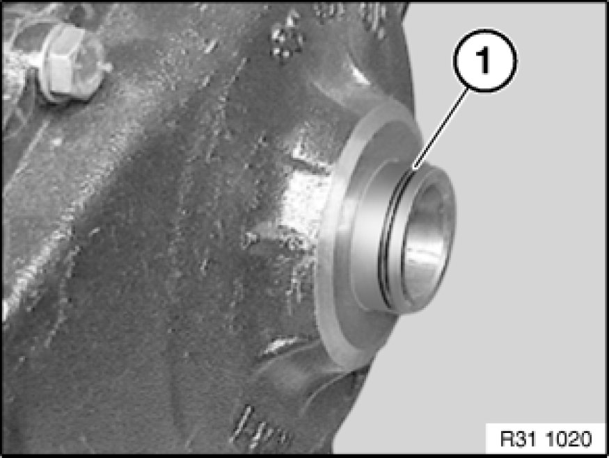

Replacing O-ring for Front Differential on Right
31 51 060 - Replacing O-ring for front differential on right

Necessary preliminary tasks:
- Remove front differential Removing and Installing/Replacing Front Differential

Remove O-ring (1) with a suitable tool from front differential.
Installation:
Insert O-ring (1) in groove and coat with front differential oil.